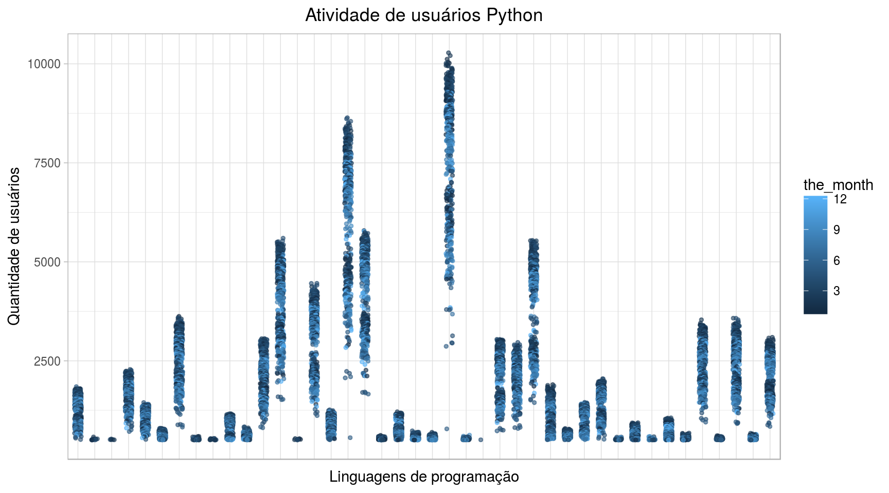
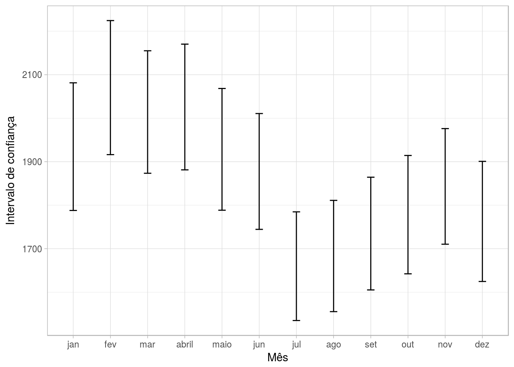
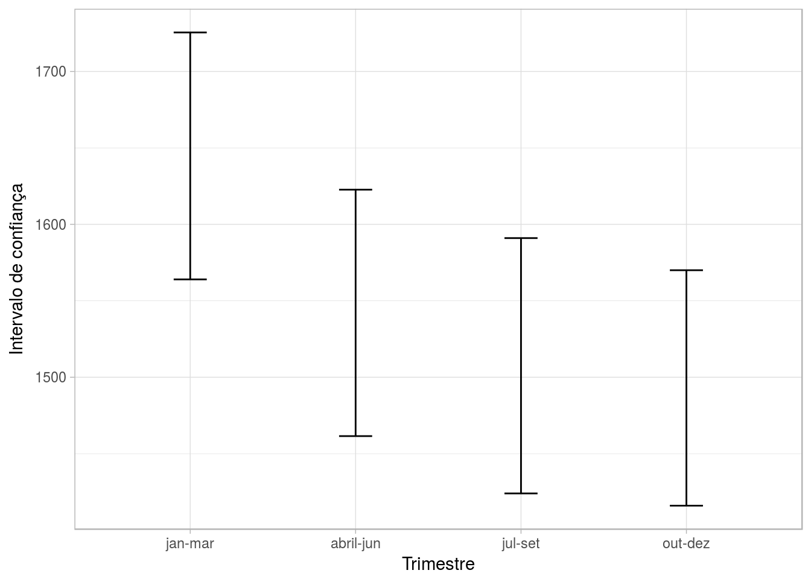
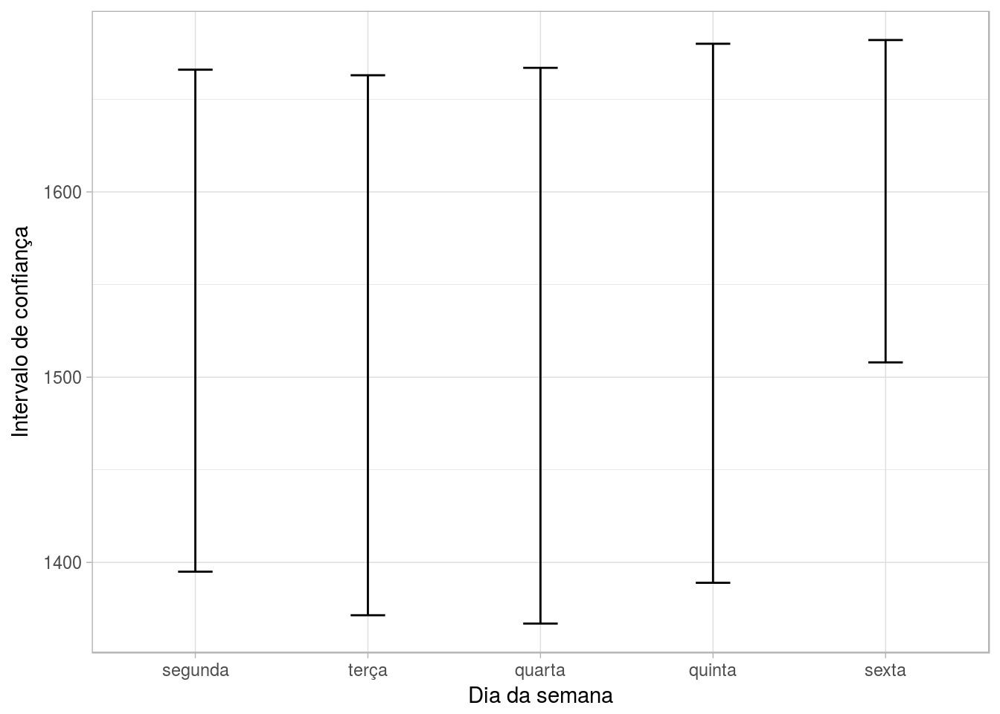
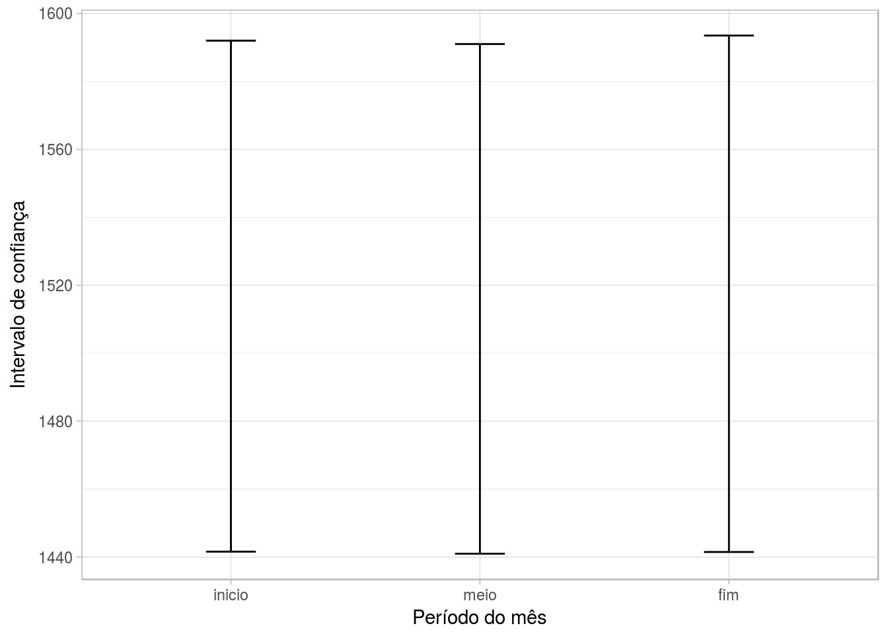

Ítalo Batista


Esta análise, realizada no contexto da disciplina Análise de Dados 1 (Computação @ UFCG), tem por objetivo avaliar a popularidade de linguagens de programação no período entre 2016 e 2017 segundo dados registrados no GitHub. Essa análise serve de mote para trabalharmos conceitos de inferência, intervalos de confiança, significância, entre outros.
A amostra contém informações sobre quantos usuários fizeram atividade no GitHub usando uma determinada linguagem de programação. É importante ressaltar que não temos dados de todos os repositórios nem de todos os usuários. Temos apenas uma amostra. Iremos usar técnicas de inferência para podermos fazer afirmações sobre toda a população a partir dos dados da amostra.
Iremos orientar esta análise segundo as seguintes perguntas:
Apenas para ter uma visualização da amostra:
head(dados)## file_extension month_day the_month the_year users full_date week_day
## 1 md 18 2 2016 10279 18-2-2016 quinta
## 2 md 17 2 2016 10208 17-2-2016 quarta
## 3 md 27 1 2016 10118 27-1-2016 quarta
## 4 md 16 2 2016 10045 16-2-2016 terça
## 5 md 26 1 2016 10020 26-1-2016 terça
## 6 md 21 3 2017 10015 21-3-2017 terçadados %>%
ggplot(aes(x = file_extension, y = users, color=the_month)) +
geom_jitter(width = .2, alpha=0.6, size=1) +
scale_x_discrete(expand=c(0.01, 0)) +
labs(title = "Atividade de usuários Python", x = "Linguagens de programação", y = "Quantidade de usuários") +
theme(plot.title = element_text(hjust = 0.5)) +
theme(axis.ticks.x=element_blank(), axis.text.x=element_blank())
Cada conjunto de pontos agrupados verticalmente é uma linguagem de programação. Vemos que as linguagens que são usadas de modo bem distintos. De interessante, há um grupo de linguagens, inclusive grande, que os programadores usam bem pouco. Há também uma linguagem que é bastante usada, inclusive se dispersando bastante de todas as outras, inclusive as mais usadas. Outra coisa também que notamos é que o topo dos grupos verticais no geral é azul escuro, que representa uma atividade feita nos primeiros meses do ano. Será que conseguiresmos afirmar que o período de maior movimentação no github é no início do ano?
Visualizando uma “timeline”:
timeline = dados %>% group_by(the_year, the_month) %>% mutate(users_month = sum(users))
max = max(timeline$users_month) + 10000
min = min(timeline$users_month) - 1000
timeline %>%
ggplot(aes(x = the_month, y = users_month, colour = as.factor(the_year))) +
geom_point() +
geom_line() +
scale_x_continuous(breaks=c(1:12)) +
scale_color_manual(values=c("gold3", "darkgrey")) +
ylim(min, max) +
labs(title = "Edições por Mês (em todas as linguagens)", x = "Mês" , y= "Número de usuários\nque fizeram edições", colour="Ano")
Com a timeline, a gente também consegue entender que os primeiros meses do ano parecem ser mais produtivos.
Vamos às nossas perguntas!
Para responder a essa pergunta, vamos dividir os dados entre os anos de 2016 e 2017 e trabalhar apenas com os dados de 2016.
dados.2016 = dados %>% filter(the_year == 2016)
dados.2017 = dados %>% filter(the_year == 2017)months = c(1:12)
experiment = data.frame()
for(m in months){
b = bootstrap(subset(dados.2016, the_month==m) , sd(users))
month.sd = CI.percentile(b, probs = c(.025, .975))
names(month.sd) = c('X2.5', 'X97.5')
month.sd$month = m
experiment = data.frame(rbind(experiment, data.frame(month.sd)))
}experiment %>%
ggplot(aes(x=month, ymin=X2.5, ymax=X97.5)) +
geom_errorbar(width = .2) +
labs(x="Mês", y="Intervalo de confiança") +
scale_x_discrete(limits=c('jan', 'fev', 'mar', 'abril', 'maio', 'jun', 'jul', 'ago', 'set', 'out', 'nov', 'dez'))
# + geom_hline(yintercept = 0, colour = "darkblue")Vemos que há algumas sobreposições de intervalos. Contudo, no geral as sobreposições estão divididas. A primeira metade do ano possui intervalos que se sobrepoem entre si. A segunda metade possui intervalos que se sobrepoem entre si. Ainda, os meses de fevereiro a abril possuem intervalos que quase em nada se sobrepoen aos meses julho, agosto e setembro. Pensando nesse sentido, vemos que fevereiro parece ser a época do ano que possui maior variância, visto que seu intervalo quase não se sobrepoe ao de nenhum outro mês da segundo metade do ano. E no geral, os primeiros meses do ano podem ter maior variância.
parte_do_ano = function(p) {
anw = ifelse(p <= 3, 1,
ifelse(p > 3 & p <= 6, 2,
ifelse(p > 6 & p <= 9, 3, 4)
)
)
return(anw)
}
dados.2016$parte_do_ano = parte_do_ano(dados.2016$the_month)experiment2 = data.frame()
for(p in c(1:4)) {
b = bootstrap(subset(dados.2016, parte_do_ano==p) , median(users))
parte.md = CI.percentile(b, probs = c(.025, .975))
names(parte.md) = c('X2.5', 'X97.5')
parte.md$trimestre = p
experiment2 = data.frame(rbind(experiment2, data.frame(parte.md)))
}experiment2 %>%
ggplot(aes(x=trimestre, ymin=X2.5, ymax=X97.5)) +
geom_errorbar(width = .2) +
labs(x="Trimestre", y="Intervalo de confiança") +
scale_x_discrete(limits=c('jan-mar', 'abril-jun', 'jul-set', 'out-dez'))
# + geom_hline(yintercept = 0, colour = "darkblue")Aqui também temos alguns intervalos que se sobrepõem, mas com trechos de sobreposição menores. O primeiro trimestre tem um intervalo que em sua quase totalidade não se sobrepõe ao segundo e ao terceiro trimestre, e em nada se sobreprõe ao último trimestre. Desse modo, concluímos que os primeiros meses do ano (de janeiro a março) são os de maior movimentação no GitHub.
languages = unique(dados.2016$file_extension)dias_da_semana = c('segunda', 'terça', 'quarta', 'quinta', 'sexta')
dados.semana = dados %>% filter(week_day %in% dias_da_semana)
experiment3 = data.frame()
for(day in dias_da_semana) {
b = bootstrap(subset(dados.semana, week_day==day) , median(users))
days.median = CI.percentile(b, probs = c(.025, .975))
names(days.median) = c('X2.5', 'X97.5')
days.median$day = day
experiment3 = data.frame(rbind(experiment3, data.frame(days.median)))
}experiment3 %>%
ggplot(aes(x=day, ymin=X2.5, ymax=X97.5)) +
geom_errorbar(width = .2) +
labs(x="Dia da semana", y="Intervalo de confiança")
# + geom_hline(yintercept = 0, colour = "darkblue")Como os intervalos se sobrepõem para todos os dias da semana, então não podemos concluir que há um dia da semana em que as pessoas programem mais.
Ainda motivado em encontrar espaços de tempo no ano / mes / dia da semana com maior movimentação, vamos tentar compreender em qual periodo do mês (início, meio ou fim) há maior movimentação no GitHub.
periodo_do_mes = function(dia) {
anw = ifelse(dia <= 7, 'inicio',
ifelse(dia > 10 & dia <= 20, 'meio', 'fim')
)
return(anw)
}
dados$periodo_do_mes = periodo_do_mes(dados$month_day)experiment4 = data.frame()
periodos_do_mes = c('inicio', 'meio', 'fim')
for(periodo in periodos_do_mes) {
b = bootstrap(subset(dados, periodos_do_mes==periodo) , median(users))
mes.periodo.md = CI.percentile(b, probs = c(.025, .975))
names(mes.periodo.md) = c('X2.5', 'X97.5')
mes.periodo.md$periodo_do_mes = periodo
experiment4 = data.frame(rbind(experiment4, data.frame(mes.periodo.md)))
}experiment4 %>%
ggplot(aes(x=periodo_do_mes, ymin=X2.5, ymax=X97.5)) +
geom_errorbar(width = .2) +
labs(x="Período do mês", y="Intervalo de confiança")
# + geom_hline(yintercept = 0, colour = "darkblue")Para o caso de um dado mês, também não é possível afirmar que haja um determinado período (início, meio ou fim) em que as pessoas programem mais, visto que o intervalo de confiança entre os períodos se sobrepõem em quase sua totalidade.